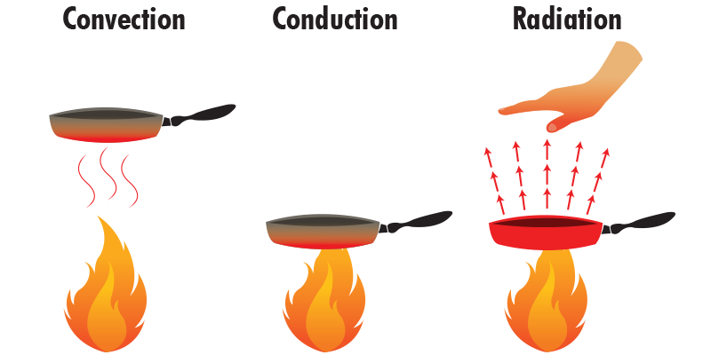
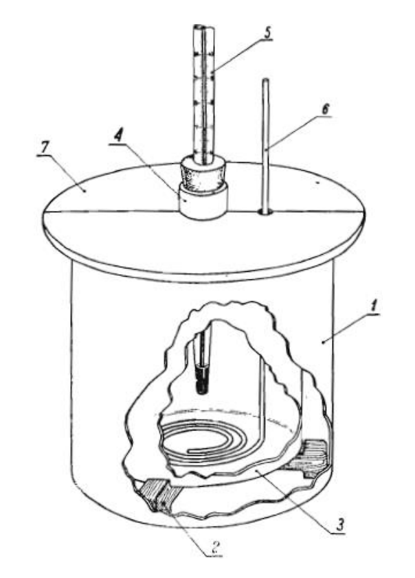

Energia wewnętrzna i temperatura
Aby lepiej zrozumieć badane wielkości, pochylmy się najpierw nad energią wewnętrzną. Jest ona jednym z kluczowych pojęć w termodynamice. Jest to suma całkowitej energii zawartej w systemie, która obejmuje zarówno energię kinetyczną cząsteczek (związaną z ich ruchem), jak i energię potencjalną wynikającą z oddziaływań między cząsteczkami. Jednostką energii wewnętrznej jest dżul (J).
Energia potencjalna wynika z oddziaływań między cząsteczkami. W ciałach stałych, gdzie cząsteczki są blisko siebie, energia potencjalna może być znacząca ze względu na silne oddziaływania międzycząsteczkowe. W gazach, gdzie cząsteczki są daleko od siebie, energia potencjalna jest zerowa.
Energia kinetyczna jest związana z ruchem cząsteczek. W gazach, płynach i ciałach stałych cząsteczki są w ciągłym ruchu, a średnia energia kinetyczna cząsteczek w substancji to temperatura. Wyższa temperatura oznacza, że średnia energia kinetyczna cząsteczek jest większa. Energię kinetyczną większą od zera mają cząsteczki wszystkich ciał o temperaturze wyższej niż 0K.
Zmiana energii wewnętrznej ciała może wynikać ze zmian w sumarycznej energii kinetycznej jego cząsteczek, co wpływa na średnią energię kinetyczną na pojedynczą cząsteczkę. To z kolei prowadzi do zmiany temperatury ciała. W przypadku przemian fazowych, takich jak topnienie, wrzenie, czy krzepnięcie, które odbywają się przy niezmiennej temperaturze, dochodzi do zmiany całkowitej energii potencjalnej cząsteczek, podczas gdy ich całkowita energia kinetyczna pozostaje bez zmian.
 https://leszekbober.pl/fizyka/przemiany-energii/energia-wewnetrzna/
https://leszekbober.pl/fizyka/przemiany-energii/energia-wewnetrzna/
Ciepło
Ciepło, w kontekście termodynamiki, jest formą energii przenoszonej między systemami lub ich częściami w wyniku różnicy temperatur. Ciepło jest transferem energii termicznej z jednego obiektu do drugiego lub z jednej części systemu do innej, zawsze w wyniku różnicy temperatur. Należy pamiętać, że ciepło jest procesem przepływu energii, a nie stanem (jak energia wewnętrzna czy temperatura).
Zgodnie z drugim prawem termodynamiki, ciepło naturalnie przepływa od obiektu o wyższej temperaturze do obiektu o niższej temperaturze, dopóki nie zostanie osiągnięta równowaga termiczna.
Ciepło jest mierzone w tych samych jednostkach co inne formy energii, najczęściej w dżulach (J) w systemie metrycznym lub w kaloriach (cal) w starszych systemach miar.
Ciepło pobrane przez ciało o masie \(m\) podczas zwiększania temperatury o \(\Delta t\) o cieple właściwym \(c_w\) wyraża się wzorem:
gdzie \(t_2\) to temperatura końcowa a \(t_1\) to temperatura początkowa
Ciepło może być przenoszone na trzy główne sposoby: przez przewodzenie (bezpośredni transfer energii między substancjami będącymi w kontakcie), przez konwekcję (przenoszenie ciepła przez ruch masy, np. w cieczach i gazach) i przez promieniowanie (transfer energii za pomocą fal elektromagnetycznych, np. światło słoneczne).
 https://naukanatalerzu.pl/sposoby-przenoszenia-energii/Ciepło właściwe
Ciepło właściwe to miara zdolności substancji do magazynowania ciepła. Jest to ilość ciepła potrzebna do podniesienia temperatury jednostki masy danej substancji o jeden stopień (na przykład o 1 stopień Celsjusza lub 1 kelwin).
Ciepło właściwe jest zazwyczaj wyrażane w jednostkach takich jak joule na kilogram na kelwin (\(J \over kg \cdot K\)) lub kalorie na gram na stopień Celsjusza (\(cal \over g \cdot ^{\circ} C\)).
Ciepło właściwe obliczamy dzieląc ciepło \(c_w\) przez iloczyn masy \(m\) podgrzewanego ciała i różnicy temperatur \(\Delta T\).
Różne substancje mają różne ciepła właściwe. Na przykład, woda ma wysokie ciepło właściwe, co oznacza, że wymaga dużo energii, aby zmienić swoją temperaturę. To właśnie dlatego woda jest efektywnym środowiskiem do przechowywania ciepła lub chłodzenia.
| Substancja | Ciepło właściwe (\(J \over kg \cdot K\)) |
|---|---|
|
Cyna Cynk Glin Lód (0°C) Miedź Ołów Żelazo Gliceryna Rtęć Woda Powietrze Tlen |
222 389 902 2100 385 128 452 2430 139 4190 1005 916 |
W niektórych przypadkach, ciepło właściwe substancji może zmieniać się w zależności od temperatury i ciśnienia. Dla wielu substancji zmiany te są jednak zazwyczaj niewielkie w typowych zakresach temperatur i ciśnień.
Podczas zmiany stanu skupienia (na przykład topnienia lodu czy parowania wody) ciepło właściwe może ulec zmianie, ponieważ procesy te wymagają energii do przełamania lub tworzenia wiązań międzycząsteczkowych.
Ciepło właściwe jest więc miernikiem, jak bardzo "odporna" na zmiany temperatury jest dana substancja, co ma szerokie zastosowanie zarówno w nauce, jak i w codziennym życiu.
Zasada bilansu cieplnego
W układzie izolowanym, czyli takim, który nie wymienia ciepła z otoczeniem, ciepło pobrane przez jedno ciało jest równe ciepłu oddanemu przez to ciało.
Absorpcja ciepła przez substancję może powodować wzrost jej temperatury lub zmianę stanu skupienia, jak w topnieniu lub parowaniu. Z kolei uwalnianie ciepła towarzyszy procesom takim jak krzepnięcie i skraplanie, mogąc również obniżyć temperaturę substancji.
Pojemność cieplna
Pojemność cieplna obiektu to ilość ciepła (energii), którą trzeba dostarczyć, aby podnieść jego temperaturę o jeden stopień (na przykład o 1 stopień Celsjusza lub 1 kelwin). Jest to miara odporności obiektu na zmiany temperatury w odpowiedzi na dodanie lub usunięcie ciepła.
Pojemność cieplna jest wyrażana w jednostkach takich jak joule na kelwin (J/K) lub kalorie na stopień Celsjusza (cal/°C).
Pojemność cieplna jest związana z ciepłem właściwym substancji, ale nie są to te same pojęcia. Ciepło właściwe jest miarą zdolności jednostki masy substancji do magazynowania ciepła, podczas gdy pojemność cieplna odnosi się do konkretnej ilości tej substancji.
Aby obliczyć pojemność cieplną \(C\) obiektu, mnożymy ciepło właściwe \(c_w\) materiału przez masę \(m\) obiektu:
Kalorymetr
Do pomiaru ciepła wydzielanego lub pobieranego podczas procesów chemicznych i fizycznych używa się kalorymetru.
 http://dydaktyka.fizyka.szc.pl/pdf/pdf_232.pdfKalorymetr składa się z dwóch pojemników aluminiowych, z których jeden jest mniejszy, a drugi większy. Mniejsze naczynie, będące właściwym kalorymetrem (3), umieszcza się na drewnianym dystansie (2) wewnątrz większego (1), zwanego płaszczem kalorymetru. Urządzenie to jest zakryte aluminiową pokrywką z szyjką na środku (4), w której umieszcza się termometr (5) zabezpieczony korkiem, a także pręt mieszadła (6) przechodzący przez dodatkowy otwór w pokrywie. Tekturowy płaszcz (7) izoluje kalorymetr, minimalizując wymianę energii cieplnej z otoczeniem. Dla precyzyjnych pomiarów, termometr powinien wskazywać temperaturę z dokładnością do 0,1 °C, a ciecz w kalorymetrze jest mieszana, aby zapewnić równomierny rozkład ciepła.
Źródła:
https://www.medianauka.pl/energia-wewnetrzna
http://cmf.p.lodz.pl/iowczarek/materialy/termodynamika
https://leszekbober.pl/
https://naukanatalerzu.pl/sposoby-przenoszenia-energii
https://zpe.gov.pl
https://www.locja.pl/haslo/pojemnosc-cieplna,523
http://dydaktyka.fizyka.szc.pl/pdf/pdf_232.pdf